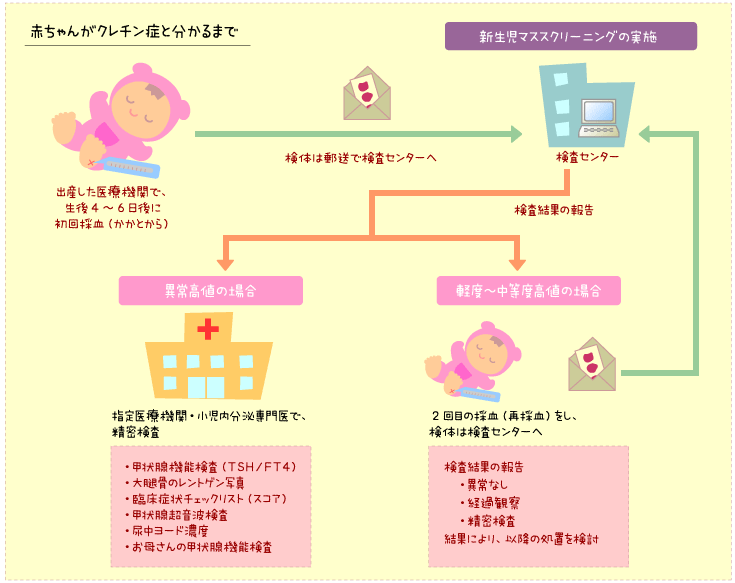

|
Lesson4 : 先天性甲状腺機能低下症（クレチン症）の診断
4-1 赤ちゃんがクレチン症とわかるまで
生まれたばかりの赤ちゃんは、どの赤ちゃんも一時的に血液中の甲状腺刺激ホルモン（TSH）が上昇します。その値は、ほとんどの赤ちゃんが生後3日を過ぎると全血値10mIU/Lという値を下回ります。
それに対し、クレチン症の赤ちゃんの大部分がこの値を上回ります。
クレチン症の赤ちゃんを早期発見・早期治療するために、生後４〜７日（＊1）の赤ちゃんから、ごく少量の血液を採取します。通常、足の裏などから採血した血液をろ紙（＊2）に採り、検査センター（代謝異常検査施設）で、乾燥したろ紙の血液中の甲状腺刺激ホルモン（TSH）の値を測定して、一定の値（「カットオフ値」という）以上の場合、再検査の連絡を受け、精密検査または再採血を受けることになります。
赤ちゃんの甲状腺刺激ホルモン（TSH）の値がカットオフ値を超えている場合、小児の内分泌疾患（＊3）に詳しい医師のいる病院で詳しく検査を受けることになります。

＊1：新生児マススクリーニングは、フェニルケトン尿症（PKU）をみつけるために始められました。
PKUの場合、赤ちゃんが一定量以上の母乳やミルクを飲む事で、血液中のフェニルアラニンの濃度が上昇して発見されます。そのため、採血の時期として生後5〜7日と決められました。
クレチン症のスクリーニングが始められた時にも、同じ生後5〜7日で問題がないとされました。
その後、お産の後の退院日が早まる傾向となったため、最近では4日目の採血も増えてきました。
＊2：マススクリーニング用に特別に作られた「ろ紙」の４箇所に血液を滴下し−合わせて約0.2ml−それを自然乾燥させたものを乾燥血液ろ紙（dried
blood on filter paper）といいます。 普通に病院などで採血して、それを臨床検査センターで検査するために送る場合は、特殊な容器（試験管）が必要で、保冷状態で送ることもあるなど、とても面倒です。しかし、乾燥血液ろ紙は、封筒に入れて検査センターに郵送することができるといった取り扱いのしやすさがあり、世界中の新生児マススクリーニングで利用されています。実は、乾燥ろ紙血液中の物質を簡便に測定できる方法が開発されたことが、新生児マススクリーニングの誕生する第一歩でした。
なお乾燥血液ろ紙を一定温度以下で冷凍保存しておくと、何年間も乾燥ろ紙血液中の物質を安定した状態で保存することができます。そうしたことから、検査が終わった乾燥血液ろ紙（検査済み濾紙血）を長期間保存して、現在マススクリーニングの対象となっていない病気を早期に見つけるための、新しい検査方法についての研究などに利用されています（「検査済み濾紙血の目的外使用」の項参照）。
＊3：体内でごく少ない量作られて大事な役割を果たす物質を「ホルモン、hormone」といい、甲状腺ホルモンや甲状腺刺激ホルモンがその代表的なものです。そうしたホルモンが少なすぎたり（低下症）、多すぎたり（過剰症）しておきる病気のことを内分泌疾患とよびます。
4-2 お母さんの食生活による甲状腺機能異常
昆布などに多く含まれているヨード（ヨウ素）は、甲状腺ホルモンの原料になります。お母さんが妊娠中などにヨードを過剰に摂取していると、赤ちゃんの甲状腺機能が一時的に悪くなる（＊4）ことが知られています。これをヨードの過剰摂取による一過性甲状腺機能低下症といいます。このため、お母さんと赤ちゃんの血液中や尿中のヨード濃度を測定する場合もあります。
＊4：例えば自動車工場に部品が大量に届けられ、自動車を作る場所が部品で占められてしまうと、自動車を作ることができなくなってしまいます。それと同じことが、ヨードを過剰に摂取していると甲状腺に起きてしまい、一時的な甲状腺機能低下症を引き起こします。この現象をネズミの実験で初めて見つけた研究者の名前をとってWolff-Chaikoff効果と呼ばれています。
健康な大人の場合は、必要以上にヨードを甲状腺の中に取り込まない仕組みが働いて、やがて甲状腺機能低下症が解消します（これをescape現象といいます）。しかし、お母さんのお腹の中にいる赤ちゃん（胎児）や生まれたばかりの赤ちゃんでは、ヨード過剰による甲状腺機能低下症になりやすく、またそれが長引きやすいことが知られています。